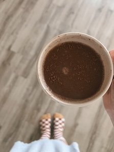

Caroline has recently worked on branching out from the book genres she typically reads by trying more thriller, mystery and horror books.

A picture of a drink you may find her curled up with. It being unstirred was an artistic choice for the photo and not an example of how she likes to drink her hot chocolate.A typical set up for when she is preparing to paint.An example from her journal of how she likes to theme it.Another theme example from her journal. For this one she designed a house based on every Haunted Mansion featured in the Disney Parks and in the movies.A version of a vision board that she made.